Bygone days
St Michael's and Penkridge on old postcards, in engravings and in photographs from the parish's collection.
From the notices
Past events
Local preview · These are made-up notices from the members demo.
On old postcards
The church through the years
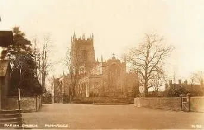
"Parish Church, Penkridge", a postcard from 1915
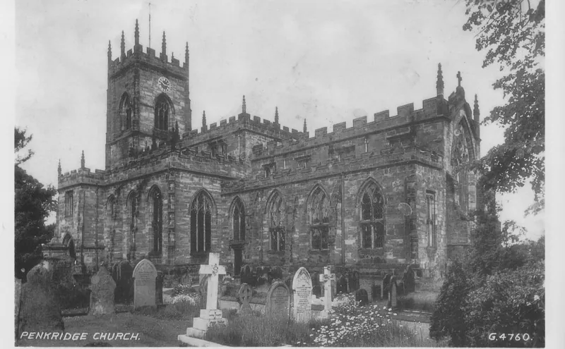
A Valentine's postcard of 1936
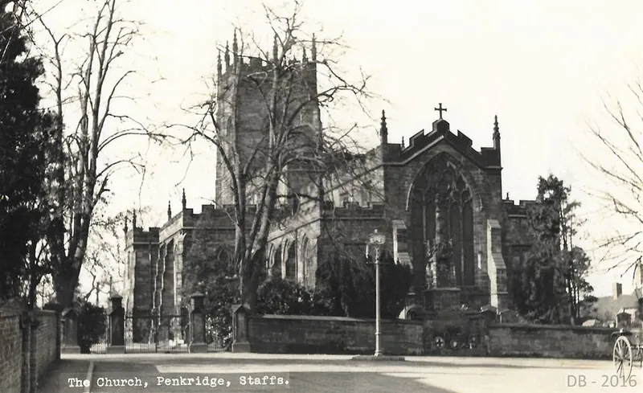
"The Church, Penkridge, Staffs."
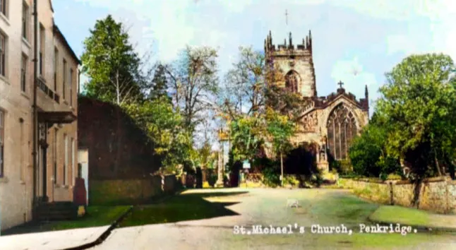
"St. Michael's Church, Penkridge", coloured by hand
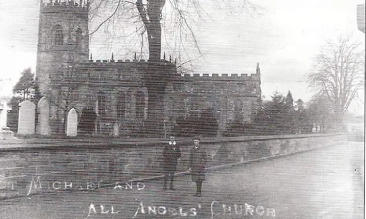
Two boys by the churchyard wall
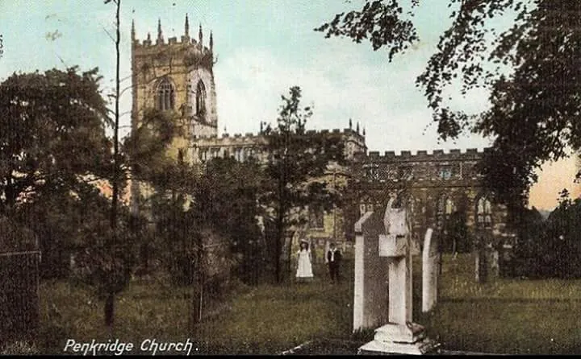
"Penkridge Church"
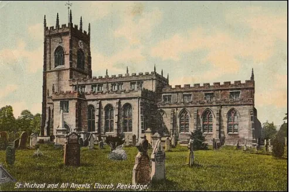
"St Michael and All Angels' Church, Penkridge"
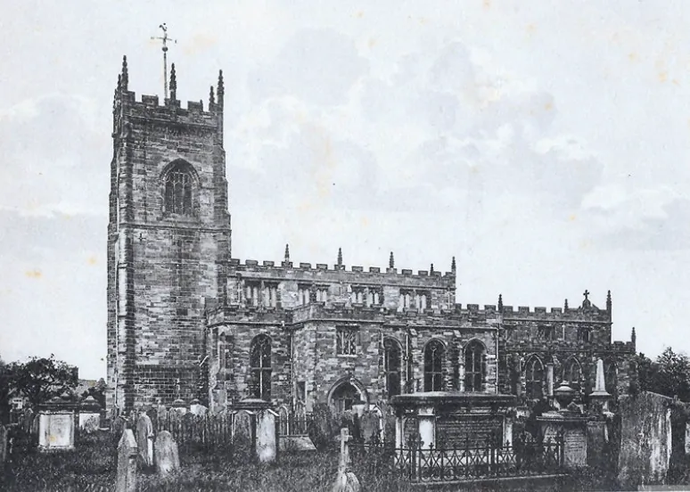
The tower and nave from the churchyard
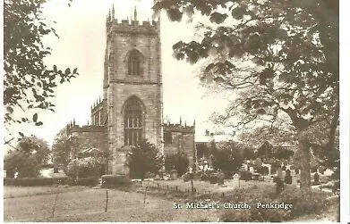
"St. Michael's Church, Penkridge"
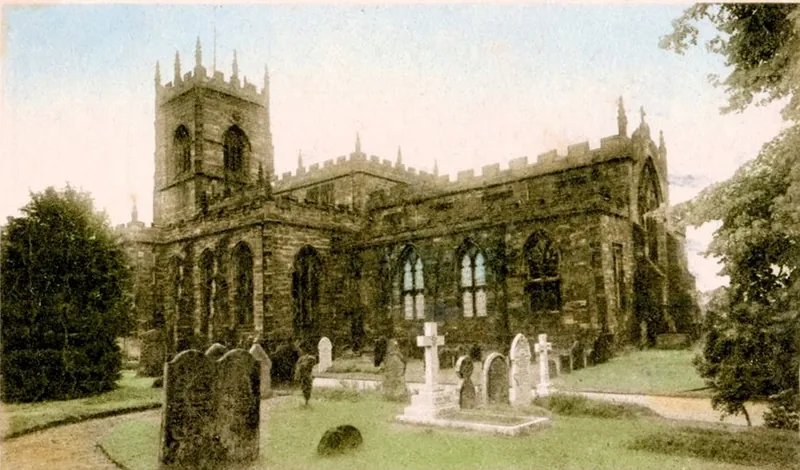
The church and churchyard, tinted by hand
Inside
The nave and chancel
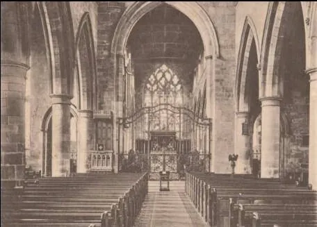
Looking east to the chancel screen, 1905
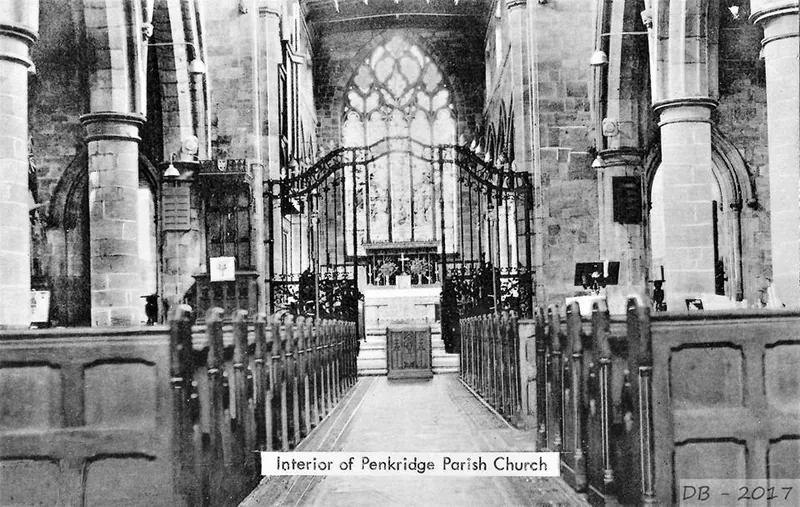
"Interior of Penkridge Parish Church". The iron screen was made in 1778 for a house in South Africa
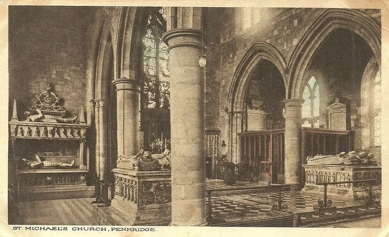
The alabaster tombs of the Littleton family
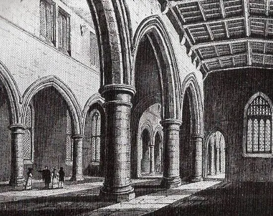
The nave in an old engraving
Before photography
In old engravings
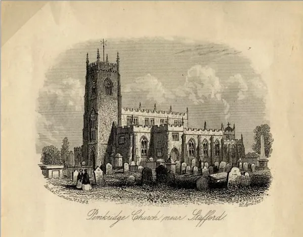
"Penkridge Church near Stafford"
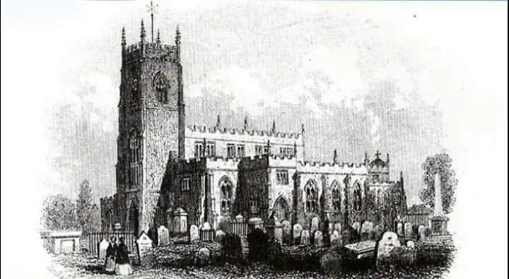
The church and churchyard
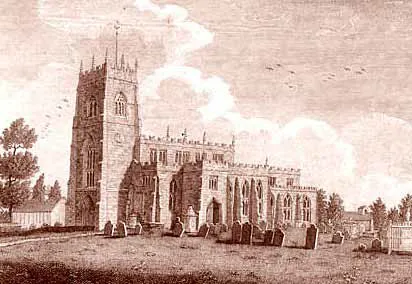
The church from the churchyard
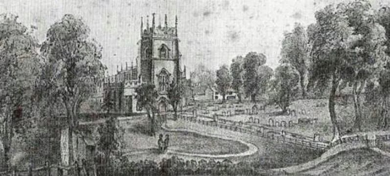
The church among the trees
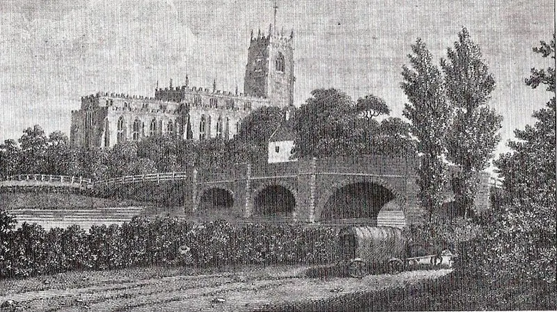
The church above the bridge
Around the church
Penkridge in the past
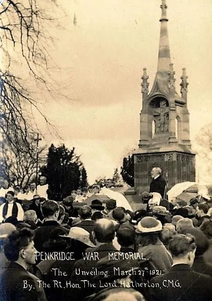
The unveiling of Penkridge War Memorial by Lord Hatherton, 27 March 1921
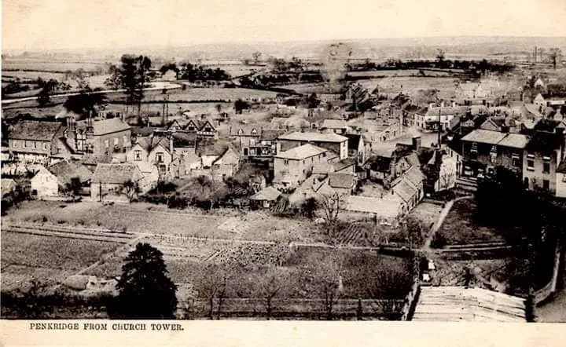
"Penkridge from Church Tower"
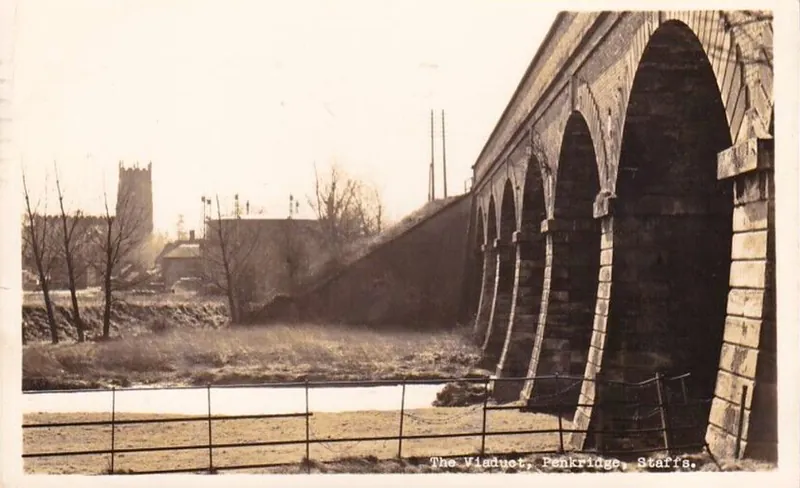
"The Viaduct, Penkridge, Staffs."
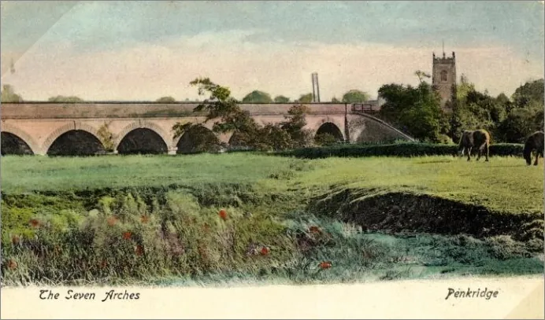
"The Seven Arches", the railway viaduct
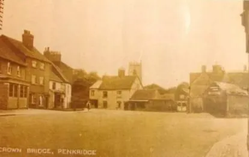
"Crown Bridge, Penkridge"